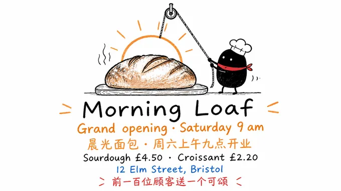
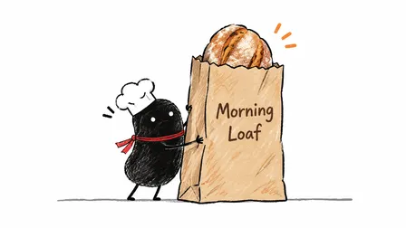
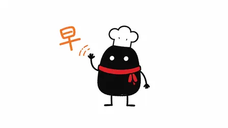
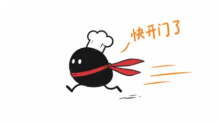
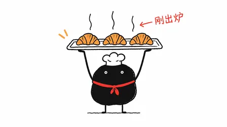
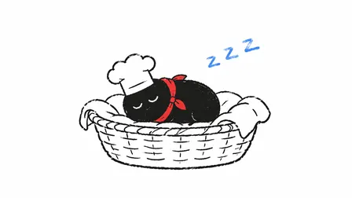

helloianneo/ian-xiaohei-illustrations: image test, 2026-11-08
The same brief for every skill: a 3:4 poster for a made-up bakery with six exact lines of English and Chinese text, a square photo of a kraft-paper bag printed with the shop's name, and four square pictures of one mascot in four poses. Claude Code (Claude Opus 5.5) made them with the skill in a throwaway sandbox; every image call went to the newest model of the family the skill asked for (GPT Image 2.6, Nano Banana 2.1 or FLUX 3). 12.4 minutes; 17 image calls ($0.051), drawn by gpt-image-2.6-ext. All results · The brief · How it is scored
Draws everything 16:9 in its own style, with its Xiaohei character in place of the bun.
Result
Broke a rule · a look of its own
- all six 16:9
- text on the mascot pictures
The pictures












The text, read letter by letter
Read by OCR (macOS Vision, five passes); a line OCR could not find as written was looked at by hand.
| Asked for | Written |
|---|---|
| Morning Loaf | right |
| Grand opening · Saturday 9 am | right |
| 晨光面包 · 周六上午九点开业 | right |
| Sourdough £4.50 · Croissant £2.20 | right |
| 12 Elm Street, Bristol | right |
| 前一百位顾客送一个可颂 | right |
| Morning Loaf (on the bag) | right |
The mascots (judged by a vision model)
| Same character in all four (1-5) | 5 |
|---|---|
| Poses as asked (of 4) | 4 |
| Chef's hat and red scarf in all four | yes |
| Text on them | yes |
The judge's note: All four consistently show the same black round bun with white chef hat and red scarf in the requested poses, but every image includes text or sound-effect lettering.
How it went (the session's closing message)
I made all six pictures with the `ian-xiaohei-illustrations` skill. The skill expects Codex's built-in image tool, so I sent its template prompts to the OpenAI image API on this machine at 1536×864. About half the calls failed at first with a generic upstream "Invalid request" error and worked when I ran them again. I checked each image against the skill's checklist:
- **`poster.png`**: The skill's character pulls the morning sun up on a rope over a sourdough loaf. All six lines of text appear exactly as written in the brief, and there is no other text.
- **`product.png`**: The character props up a kraft-paper bag with a sourdough loaf peeking out of the top. "Morning Loaf" is printed in dark brown and there is no other text.
- **`mascot-1.png` to `mascot-4.png`**: The character waves from the front, runs left in side view, holds up a tray of three croissants, and sleeps in a wicker basket. It looks the same in all four: round black body, white dot eyes, white chef's hat and red scarf.
The skill's fixed rules stopped me from meeting four parts of the brief:
- Every image is 16:9 landscape, not 3:4 or 1:1.
- The mascot is the skill's required character (a black creature with white dot eyes) wearing Bun's chef's hat and red scarf, not a bread roll.
- Backgrounds are plain white, including the bag picture, where the brief asked for light grey.
- Each mascot picture has one short handwritten note ("早", "快开门了", "刚出炉", "zzz"), because the skill requires them and the brief asked for no text.
The first drafts are also kept in `~/work/gen/`.
DELIVERABLE: ~/work/output/